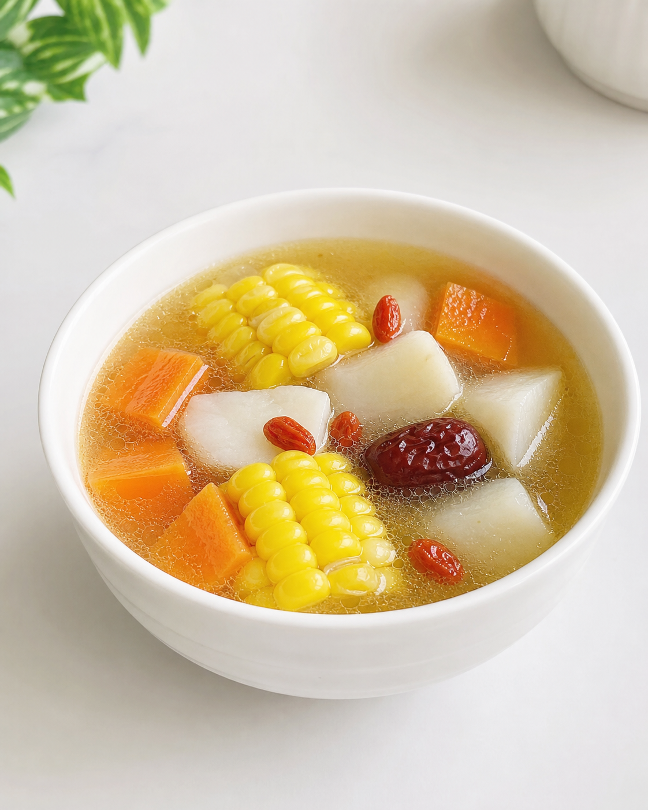

健脾開胃、滋潤去濕四季家常湯，高纖高維、增強免疫力，適合全家飲用。 加薏米伏苓加強祛濕健脾效果，似你之前淮山湯升級版。

| 材料 | 2人份量 | 備註 |
|---|---|---|
| 鮮淮山 | 半條（約150g，切塊） | 戴手套切防痕癢，浸醋水30分鐘解毒 |
| 紅蘿蔔 | 半條（約100g，去皮切件） | - |
| 粟米 | 1條（約200g，切件） | 可加粟米鬚增效 |
| 豬骨/豬展 | $15-20（約200g，切件） | 需汆水，去腥 |
| 無花果（乾） | 2粒 | 清甜味，街市海味檔買 |
| 薏米 | 2-3湯匙（約25g） | 浸軟1小時去澀 |
| 伏苓（茯苓） | 15g（約1湯匙，切片） | 乾貨，浸軟，街市易買 |
| 水 | 1.5公升 | 蓋過所有材料 |
| 鹽 | 少許 | 最後加 |